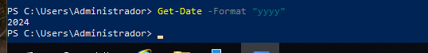
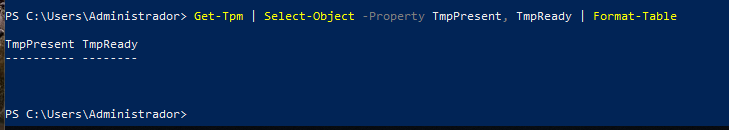
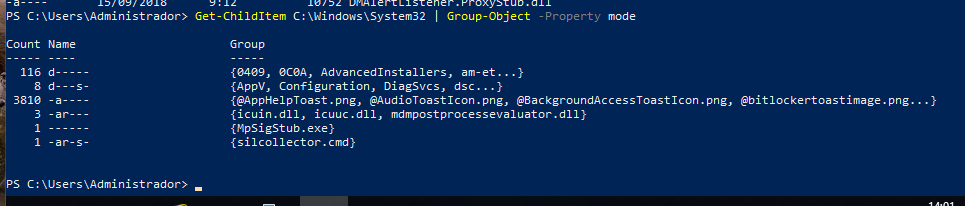
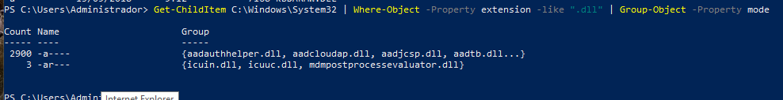
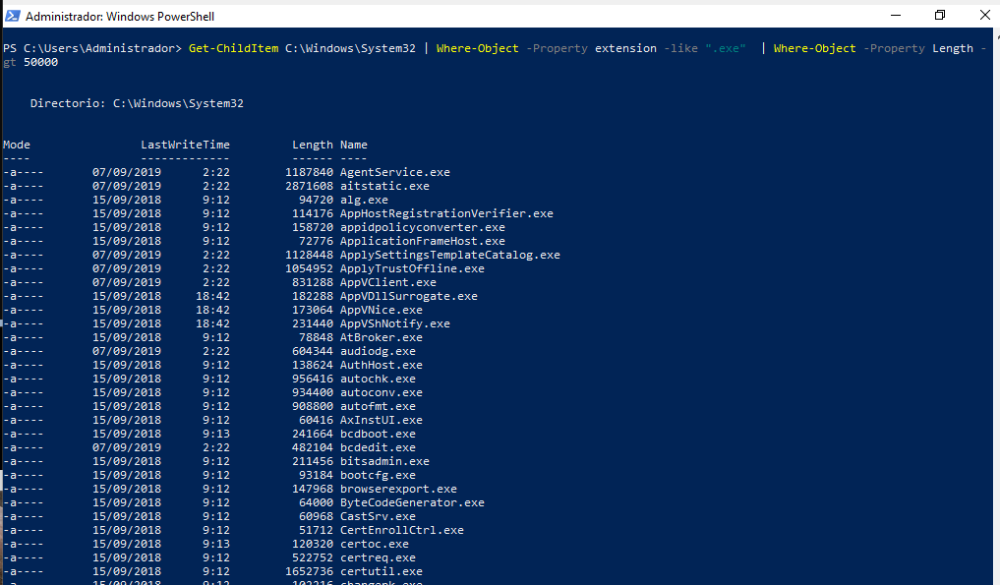
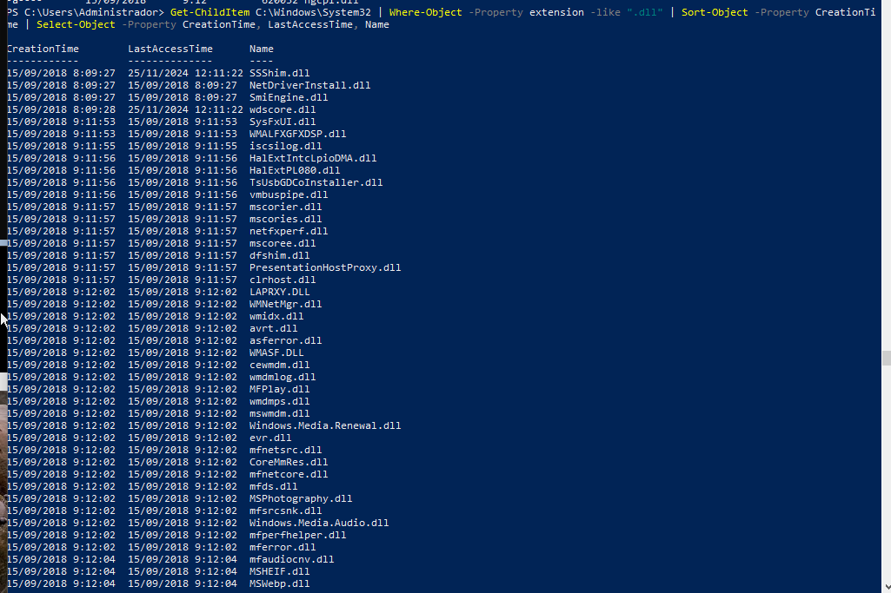
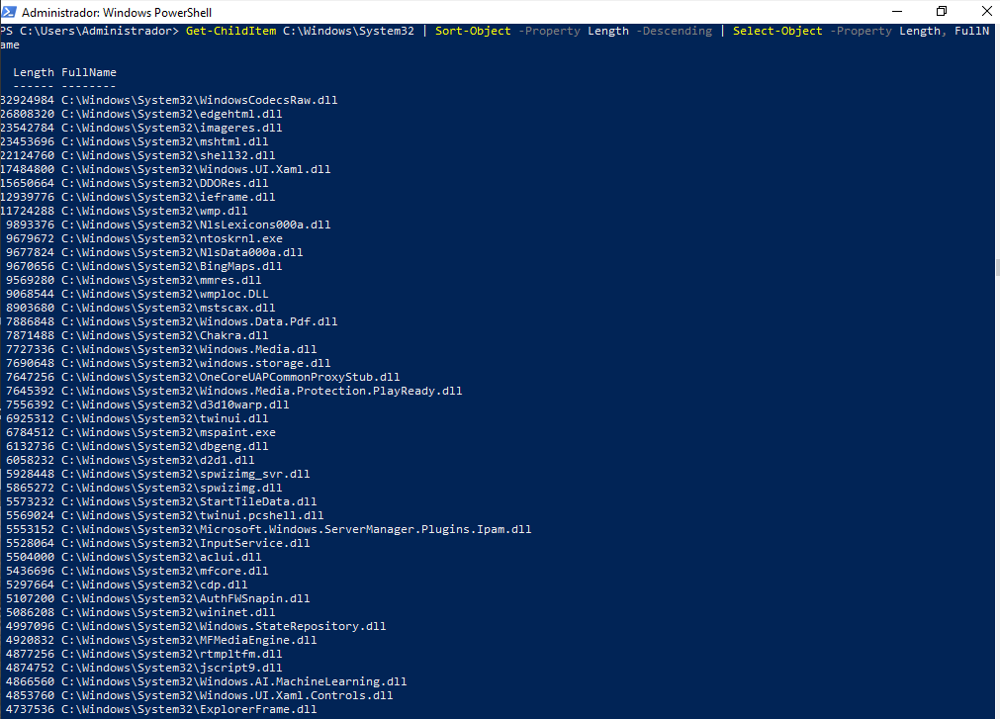
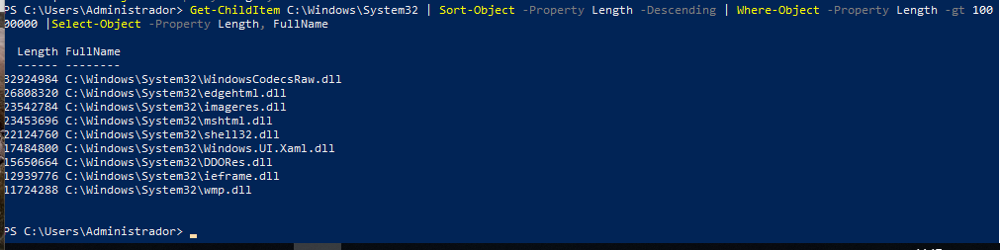

PR0403: El pipeline en PowerShell
1. Mostrar únicamente el año actual con Get-Date

2. Mostrar información del TPM en formato tabla
Propiedades: TpmPresent, TpmReady, TpmEnabled y TpmActivated.

Ejercicios con los ficheros de C:\Windows\System32
2.1 Contar el número de ficheros y directorios en C:\Windows\System32

2.2 Contar los ficheros con extensión .dll

2.3 Mostrar los archivos .exe con un tamaño superior a 50000 bytes

2.4 Listar archivos .dll ordenados por fecha de creación
Propiedades mostradas: CreationTime, LastAccessTime y Name.

2.5 Mostrar tamaño y nombre completo de los ficheros ordenados por tamaño

2.6 Mostrar archivos con tamaño superior a 10MB ordenados por tamaño

2.7 Mostrar archivos .exe con tamaño superior a 10MB ordenados por tamaño